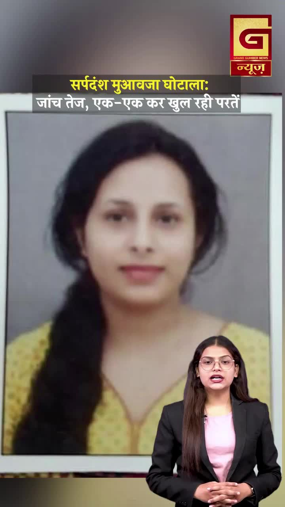
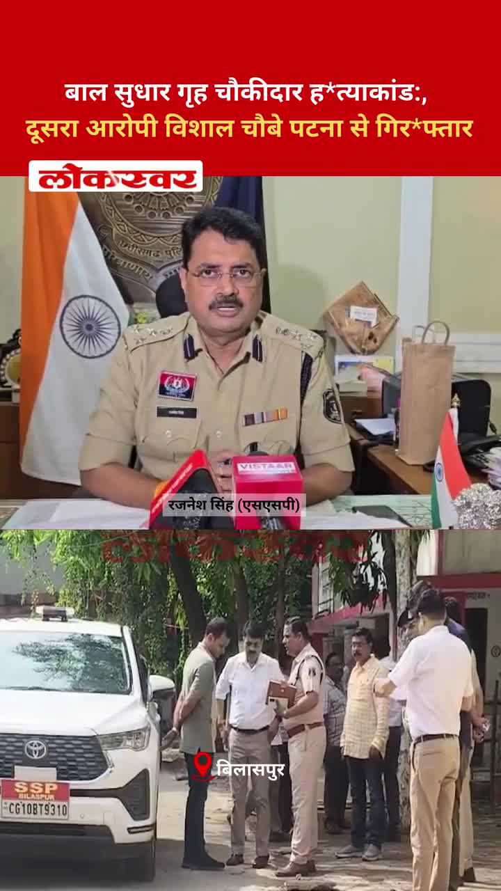
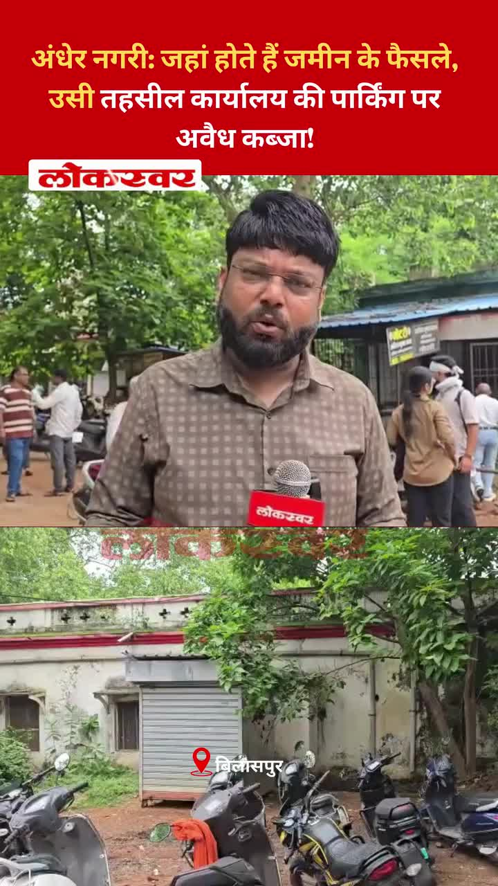
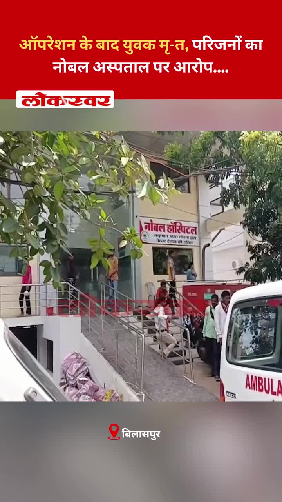
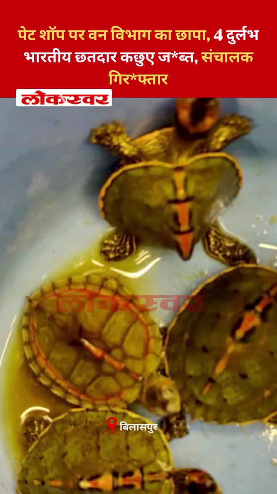
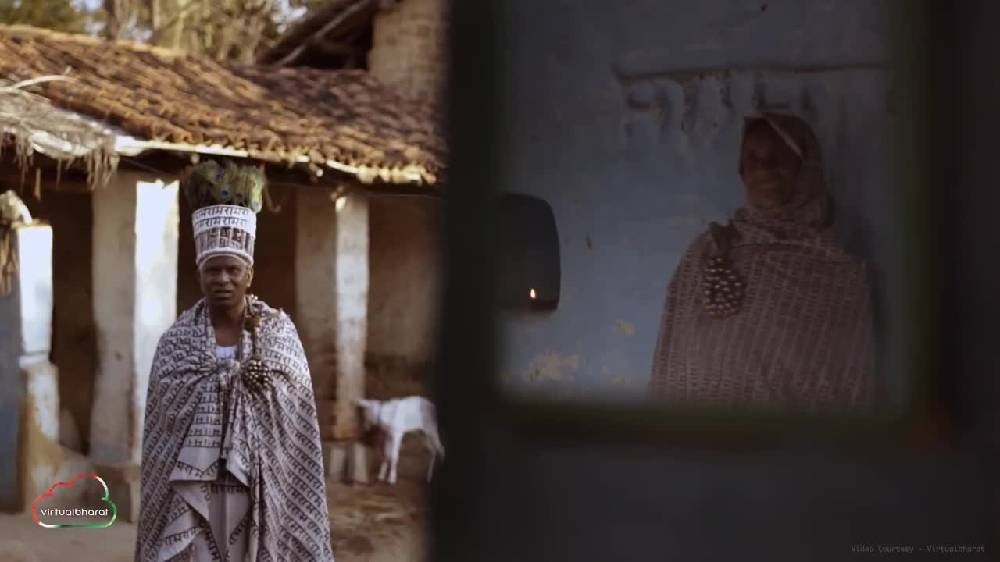
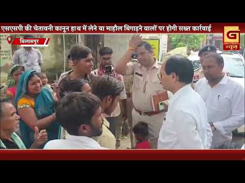
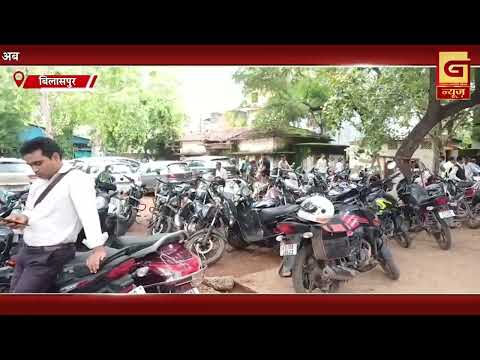

Bilaspur News Hub
3
BUSINESS
2
EDUCATION
7
EVENT
13
GOVERNMENT
2
HEALTH
2
INFRASTRUCTURE
21
INSTAGRAM NEWS
15
NEWS
1
OTHER
16
POLICE
1
SOCIAL
7
YOUTUBE VIDEOS
BUSINESS3

The Hitavada · Scraped: 2026-07-20 12:17:48
Chhattisgarh topped a key investment climate ranking, attracting proposals worth Rs 8 lakh crore. This reflects the state's improving business environment and growing investor confidence, promising job creation and economic growth.

The Hitavada · Scraped: 2026-07-20 08:40:49
India is entering a new era of domestically produced civil aircraft, marking a milestone for the Make in India initiative. This development aims to reduce import dependence and boost the aerospace sector. It also promises job creation and technological advancement in the country.

The Hitavada · Scraped: 2026-07-20 08:40:49
Regulatory authorities have filed cases against two fertiliser traders for multiple violations, including illegal stockpiling and price manipulation. The action aims to ensure fair trade practices and protect farmers from exploitation.
EDUCATION2
CG Wall · Published: Mon, 20 Ju | Scraped: 2026-07-20 17:25:43
After leaders recommended admissions, many students failed, prompting pressure on the principal. The BELO responded to the situation, indicating action. The case highlights issues in admission and evaluation processes.

BREAKINGDr Mahant lashes out at BJP over paper leaks / डॉ. महंत ने पेपर लीक मामले पर भाजपा पर किया प्रहार
The Hitavada · Scraped: 2026-07-20 12:17:48
Dr. Mahant criticized the BJP over recent exam paper leaks, calling it a threat to fair education. He demanded strict action and transparency, sparking political debate on exam integrity.
EVENT7

Nai Dunia Bilaspur · Published: Mon, 20 Ju | Scraped: 2026-07-20 05:36:32
After three days of heavy rain, Bilaspur saw the downpour stop but humidity took over, leaving garbage piles on roads and highlighting drainage issues.

CG Wall · Published: Mon, 20 Ju | Scraped: 2026-07-20 12:17:48
The Bilaspur branch of Chhattisgarh Telugu Maha Sangam held an executive meeting to chart grand events and organizational growth. Important decisions were taken to boost community activities and membership, reflecting a friendly atmosphere and future plans.

The Hitavada · Scraped: 2026-07-20 12:17:48
Young shuttler Sanvi secured the GD U-15 title and finished second in singles at the tournament. Her performance showcased talent and determination, earning praise and marking a major achievement for her budding career.
The Hitavada · Scraped: 2026-07-20 12:17:48
Ved clinched the chess championship title after strategic play and intense matches. His victory highlights dedication to chess and inspires young players, adding to his reputation as a promising talent.

The Hitavada · Scraped: 2026-07-20 08:40:49
The Ram Temple Trust will hold a meeting on July 22 to discuss upcoming developments and management. Details of the agenda are yet to be released.
The Hitavada · Scraped: 2026-07-20 08:40:49
P.V. Sindhu claimed her first Japan Open title, defeating a top-ranked opponent in a thrilling final. The victory marks a significant milestone in her badminton career.
G News Bilaspur · Published: 2026-07-20 | Scraped: 2026-07-20 17:25:43
G News Bilaspur broadcast a special prime program on July 20.
GOVERNMENT13

Nai Dunia Bilaspur · Published: Mon, 20 Ju | Scraped: 2026-07-20 05:36:32
The Chhattisgarh High Court directed the Centre and State not to terminate or withhold salaries of computer operators after ten years of service, granting them job security and relief.

CG Wall · Published: Mon, 20 Ju | Scraped: 2026-07-20 05:36:32
Judicial officers across Chhattisgarh are receiving training in e-summons and digital tools to make the justice system more modern and transparent, starting in Bilaspur.

Nai Dunia Bilaspur · Published: Mon, 20 Ju | Scraped: 2026-07-20 08:40:49
The Chhattisgarh High Court ruled that women employed on a daily wage basis by the State Women Commission are not eligible for the Shram Samman Nidhi scheme. The decision impacts many female workers seeking the benefit.

Nai Dunia Bilaspur · Published: Mon, 20 Ju | Scraped: 2026-07-20 12:17:48
After previous schemes, the new 'gaudham' model is launched by Sai government, echoing earlier initiatives. Meanwhile, fatal accidents keep occurring on the national highway, prompting calls for better road safety.

BREAKINGHeavy rain alert for Chhattisgarh next 48 hrs / अगले 48 घंटे छत्तीसगढ़ में भारी बारिश की चेतावनी
Lokswar · Published: Mon, 20 Ju | Scraped: 2026-07-20 12:17:48
Weather department warns of heavy rain in Chhattisgarh for the next 48 hours, urging residents to stay alert and avoid low‑lying areas to prevent flooding.

Nai Dunia Bilaspur · Published: Mon, 20 Ju | Scraped: 2026-07-20 15:50:45
छत्तीसगढ़ हाई कोर्ट ने जाति प्रमाणपत्र नियमों पर एक ऐतिहासिक फैसला सुनाया है, जिससे कई आवेदकों को लाभ होगा। यह फैसला प्रमाणीकरण प्रक्रिया को सरल बनाने की उम्मीद जगाता है।

CG Wall · Published: Mon, 20 Ju | Scraped: 2026-07-20 15:50:45
बिलासपुर जिले में सर्पदंश मामले में राजस्व विभाग के तीन लिपिकों की गिरफ्तारी के विरोध में लिपिक संघ ने प्रदर्शन किया। रोहित तिवारी के नेतृत्व में कलेक्टर-एसपी को ज्ञापन सौंपकर निष्पक्ष जाँच की माँग की गई।

Nai Dunia Bilaspur · Published: Mon, 20 Ju | Scraped: 2026-07-20 17:25:43
Three clerks from the SDM and tehsildar offices were arrested for staging fake snake bite deaths to claim compensation. The racket involved fabricating incidents to骗取 मुआवजा. Authorities are investigating further.

The Hitavada · Scraped: 2026-07-20 12:17:48
Chief Minister Sai will attend the Shala Praveshotsav ceremony in Jamgaon, marking the start of the school year. The event aims to boost enrollment and highlight education initiatives, reflecting the government's focus on improving schooling access.

The Hitavada · Scraped: 2026-07-20 08:40:49
The Madhya Pradesh cabinet has approved the draft Uniform Civil Code (UCC) Bill, aiming to introduce a common set of laws for all citizens regardless of religion. The move is part of broader efforts to harmonize personal laws across the state. The bill will now proceed through the legislative process.

The Hitavada · Scraped: 2026-07-20 08:40:49
The opposition staged a brief walk‑out during an all‑party meeting as a symbolic protest, indicating a tough Monsoon Session ahead. Their action underscores deep disagreements with the government’s agenda. Observers expect heated debates and possible disruptions in Parliament.
The Hitavada · Scraped: 2026-07-20 08:40:49
The Delhi High Court declined to intervene in Wangchuk’s medical treatment, leaving decisions to hospital authorities. This ensures medical professionals can manage care without judicial oversight.
The Hitavada · Scraped: 2026-07-20 08:40:49
The India Meteorological Department issued a warning prompting authorities to enhance flood preparedness measures across vulnerable regions. Emergency response teams are now on alert, and relief supplies are being pre-positioned.
HEALTH2

Lokswar · Published: Mon, 20 Ju | Scraped: 2026-07-20 12:17:48
New Horizon Dental College organized a mega oral health camp at HSM Global School in Bilaspur, checking 122 students and parents. The event aimed to promote dental hygiene and early detection of oral issues among schoolchildren.
Lokswar · Published: Mon, 20 Ju | Scraped: 2026-07-20 12:17:48
Health workers in Bilaspur staged a protest against the state government's move to transfer operation of public pathology laboratories to HL, fearing job losses and reduced public access. The demonstration highlights concerns over privatization of essential health services.
INFRASTRUCTURE2

BREAKINGLeelagar river floods, bridge submerged, traffic halted / लीलागर नदी में उफान, पुल डूबा, आवागमन बंद
Nai Dunia Bilaspur · Published: Mon, 20 Ju | Scraped: 2026-07-20 08:40:49
Heavy rains caused the Leelagar river to overflow, submerging the Konargarh‑Kutighat bridge and cutting off road traffic. Water also entered Dhanuhar Dera and several nearby settlements, affecting many residents.

Nai Dunia Bilaspur · Published: Mon, 20 Ju | Scraped: 2026-07-20 12:17:48
Rising water levels in two reservoirs have triggered high alerts for 11 nearby villages in Bilaspur. Authorities are monitoring the situation and preparing for possible evacuations, advising residents to stay away from flood-prone areas.
INSTAGRAM NEWS21


A social media post from Bilaspur Today News shares a devotional message honoring Lord Bhole Nath, reflecting the community's religious spirit and cultural celebrations.


A social media post shares the divine vision of Mother Naina Devi on 19 July 2026, describing her presence on high mountains and offering solace to devotees.
🌹 || जय माँ नैना देवी || 🌹आज के दिव्य दर्शन | दिनांक: [19.07.2026]"ऊंचे पहाड़ों वाली, भक्तों के दुखों को हरने वाली,माँ नैना देवी के पावन चरणों में कोटि-कोटि प्रणाम।"माँ के सुंदर स्वरूप के दर्शन कीजिए और अपने दिन की मंगलमयी शुरुआत कीजिए। करुणामयी माँ आपकी हर जायज मनोकामना पूरी करें।👉 कमेंट में 'जय माता दी' लिखें और इस दिव्य दर्शन को अपनों के साथ भी शेयर करें। 🙏❤️ by @bilaspur_today_news
सर्प दंश मामले में बड़ा खुलासा: फर्जी सील और दस्तावेज बरामद; SSP की मुस्तैदी से बेनकाब हुआ गिरोह #BilaspurNews #BilaspurCrime #SnakebiteScam #ChhattisgarhNews #BilaspurPolice #FakeDocumentScam #CGCrimeUpdate #SarkandaPolice #TorwaPolice #BreakingNews by @lokswar.in
चौकीदार ह*त्याकांड : तीन फरार किशोरों की तलाश तेज, भड़काने वालों पर भी होगी कार्रवाई #Bilaspur #BilaspurNews #BilaspurCrime #ChhattisgarhNews #CGNews #JusticeForNarendraKhande #ChowkidarHatyakand #SarkandaPolice #BilaspurPolice #BreakingNews by @lokswar.in
4 घंटे NH-49 जाम करने वाले प्रदर्शनकारियों पर FIR दर्ज #bilaspurnews #bilaspurpolice #smartcitybilaspur #crimenews #ProtestRally #highway #chakajam by @lokswar.in
जिम्मेदार अभिभावक की पहचान : 18 वर्ष से कम आयु के बच्चों को वाहन न दें...‼️🚦Disclaimer: AI-Generated Video • For Educational & Public Awareness Purposes Only. by @bilaspurdist
साइबर हाइजीन : सतर्कता से साइबर सुरक्षा...‼️ by @bilaspurdist

Investigation into Bilaspur’s snake‑bite compensation scam continues, leading to the arrest of a female doctor. Authorities are probing further fraud allegations.
A video of an assault at Khongsara railway station has gone viral, raising concerns over safety measures. Authorities are reviewing security protocols amid public outcry.

The second suspect in the murder of a watchman at a juvenile reform home was arrested in Patna. The case highlights security lapses in correctional facilities, and the probe continues.

Bilaspur's tehsil office, where land decisions are made, faces illegal encroachment on its parking area. This misuse of government property raises concerns about oversight and enforcement.
A youth was fatally assaulted with a knife and brick after a drunken argument in Bilaspur. Police have arrested two suspects in connection with the murder.

A young patient died following surgery at Noble Hospital, prompting his family to accuse the medical facility of negligence. The case has sparked calls for accountability.

Forest officials raided a pet shop in Bilaspur, recovering four endangered Indian roofed turtles and arresting the operator. The operation highlights illegal wildlife trade concerns.

The documentary 'Ram-Nami', showcasing Chhattisgarh's unique devotional tradition, has been chosen for the 72nd National Film Awards. This recognition highlights the state's cultural heritage.
The Chhattisgarh government has enacted the Business Ease Bill-2026, aiming to simplify procedures and attract investment. This historic legislation is expected to boost the state's business environment and promote economic growth.
Intense monsoon showers have inundated Bilaspur, leading to waterlogging and traffic chaos. Residents are advised to avoid low-lying areas while authorities monitor the situation.
Angry pilgrims in Bilaspur protested against cancelled train services by gheraoing the railway office. The demonstration highlighted the disruption faced by travelers and demanded action from railway authorities.
A large crowd gathered at Devkinandan Chowk in Bilaspur today to show solidarity with the ongoing protest in Delhi. The demonstration highlighted local support for the capital's demands, reflecting widespread public concern. Organizers said the protest underscores community engagement.
NEWS15

Lokswar · Published: Mon, 20 Ju | Scraped: 2026-07-20 08:40:49
<p>(प्रदीप भोई) : प्रकृति की मार ने कोरबा जिले के प्रसिद्ध धार्मिक और पर्यटन स्थल चैतुरगढ़ की राह मुश्किल कर दी है। लगातार हुई मूसलाधार बारिश से मां महिषासुर मर्दिनी मंदिर तक पहुंचने वाला कंक्रीट रैम्प बुरी तरह क्षतिग्रस्त हो गया है। सुरक्षा के मद्देनज़र प्रशासन ने रैम्प पर दोपहिया और चारपहिया वाहनो

Lokswar · Published: Mon, 20 Ju | Scraped: 2026-07-20 08:40:49
<p>(दिलीप जगवानी) : बिलासपुर – डॉक्टर्स कॉलोनी में श्री बागेश्वर कसौंधन वैश्य समाज द्वारा पर्यावरण संरक्षण एवं समाजहित के उद्देश्य से फलदार पौधों का रोपण कार्यक्रम आयोजित किया गया। कार्यक्रम में समाज के सदस्यों ने उत्साहपूर्वक भाग लेते हुए अधिक से अधिक पौधे लगाने एवं उनकी नियमित देखभाल करने का
Lokswar · Published: Mon, 20 Ju | Scraped: 2026-07-20 08:40:49
<p>(भूपेंद्र सिंह राठौर) : बिलासपुर में वन विभाग की राज्य उड़नदस्ता टीम और बिलासपुर वन परिक्षेत्र ने संयुक्त कार्रवाई करते हुए जरहाभाठा स्थित एक पेट शॉप पर छापेमारी कर चार प्रतिबंधित भारतीय छतदार कछुए जब्त किए हैं। टीम ने दुकान संचालक को गिरफ्तार कर वन्यजीव संरक्षण अधिनियम के तहत मामला दर्ज किया है

CG Wall · Published: Mon, 20 Ju | Scraped: 2026-07-20 15:50:45
बिलासपुर….विधानसभा में बेलतरा विधायक सुशांत शुक्ला द्वारा उठाए गए कथित सर्पदंश मुआवजा घोटाले ने अब बड़ा आपराधिक रूप ले लिया है। कलेक्टर के जांच आदेश के बाद बिलासपुर पुलिस की पड़ताल में फर्जीवाड़े का ऐसा संगठित नेटवर्क सामने आया है, जिसने वर्षों तक मौत के मामलों को सांप के काटने से हुई मौत बताक

CG Wall · Published: Mon, 20 Ju | Scraped: 2026-07-20 15:50:45
बिलासपुर।विगत संध्या साढ़े चार बजे सांई आनंदम परिसर उसलापुर में साहित्य मनीषी और वरिष्ठ गीतकार विजय कल्याणी तिवारी की नवमीं कृति “अब हम रहते डरे डरे” का एक गरिमामय समारोह में विमोचन संपन्न हुआ।इस विमोचन समारोह में मुख्य अभ्यागत न्यायमूर्ति चन्द्र भूषण वाजपेयी थे एवं अध्यक्षता बिलासपुर
Lokswar · Published: Mon, 20 Ju | Scraped: 2026-07-20 15:50:45
<p>जांजगीर-चांपा जिले में अवैध रूप से रह रहे अप्रवासियों और संदिग्ध गतिविधियों पर पुलिस ने सख्त निगरानी शुरू कर दी है। पुलिस अधीक्षक विजय कुमार पाण्डेय ने प्रेस कॉन्फ्रेंस कर मकान मालिकों, होटल संचालकों और संस्थानों से किरायेदारों व कर्मचारियों का अनिवार्य पुलिस सत्यापन कराने की अपील की है। एसपी ने
Lokswar · Published: Mon, 20 Ju | Scraped: 2026-07-20 15:50:45
<p>छत्तीसगढ़ शासन के स्कूल शिक्षा विभाग ने बिलासपुर जिला शिक्षा अधिकारी के प्रभार को लेकर आदेश जारी किया है। नियमित पदस्थापना होने तक डॉ. अजय कौशिक को जिला शिक्षा अधिकारी, बिलासपुर का अतिरिक्त प्रभार सौंपा गया है। स्कूल शिक्षा विभाग द्वारा 20 जुलाई 2026 को जारी आदेश के अनुसार, सहायक संचालक एवं मूल प

Lokswar · Published: Mon, 20 Ju | Scraped: 2026-07-20 15:50:45
<p>(आशीष मौर्य संपादक) : बिलासपुर केंद्रीय जेल में एक बार फिर एक कैदी की मौत से जेल प्रशासन पर सवाल खड़े हो गए हैं। सीने में दर्द की शिकायत के बाद कैदी को सिम्स अस्पताल ले जाया गया, जहां डॉक्टरों ने उसे मृत घोषित कर दिया। पिछले एक महीने में जेल के भीतर यह चौथी …</p>
<p>The post <a href="https:
Lokswar · Published: Mon, 20 Ju | Scraped: 2026-07-20 17:25:43
Dr. Charan Das Mahant, Leader of Opposition, came to Bilaspur and visited Pratik Upwaja's residence, meeting the family. The visit was part of his regional tour.
Lokswar · Published: Mon, 20 Ju | Scraped: 2026-07-20 19:27:40
<p>मुंगेली पुलिस ने मंदिरों में हुई दो चोरी की वारदातों का खुलासा करते हुए दो आरोपियों को गिरफ्तार किया है। पुलिस ने आरोपियों के कब्जे से करीब 1 लाख 75 हजार रुपये कीमत के सोने-चांदी के आभूषण बरामद किए हैं। मामले में दो अन्य आरोपी पहले से ही दूसरे प्रकरण में जेल में बंद हैं। …</p>
<p>The post <
The Hitavada · Scraped: 2026-07-20 08:40:49
Heavy monsoon rains across the country have caused fatal incidents, resulting in 16 deaths. The disasters highlight the vulnerability of infrastructure and the need for disaster response. Authorities are assessing the damage and providing relief.

The Hitavada · Scraped: 2026-07-20 08:40:49
In response to the killing of US troops in Jordan, America launched strikes against Iran's Revolutionary Guard. The retaliation aims to deter further attacks in the region.
The Hitavada · Scraped: 2026-07-20 08:40:49
Recent rainfall in Jabalpur has concluded a prolonged dry spell, bringing relief to farmers and residents. The showers have replenished water sources and improved the local agricultural outlook.
G News Bilaspur · Published: 2026-07-20 | Scraped: 2026-07-20 17:25:43
G News Bilaspur reports on the latest developments in the region, covering political, social, and economic updates. The bulletin highlights key events and provides insights into current affairs affecting the local community.

G News Bilaspur · Published: 2026-07-20 | Scraped: 2026-07-20 21:07:08
G News Bilaspur covers latest updates and developments, highlighting key events and current affairs. The bulletin aims to keep viewers informed about important local news.
OTHER1

G News Bilaspur · Published: 2026-07-20 | Scraped: 2026-07-20 22:51:36
G News Bilaspur reports the latest updates from the G NEWS platform, covering local events and information. It acts as a regular bulletin for community news.
POLICE16
CG Wall · Published: Mon, 20 Ju | Scraped: 2026-07-20 01:28:32
Four juvenile inmates escaped from a special home in Bilaspur, resulting in the murder of watchman Narendra Kumar. SSP Rajnesh Singh pledged to apprehend the fugitives and take legal action against those inciting violence.

Nai Dunia Bilaspur · Published: Mon, 20 Ju | Scraped: 2026-07-20 08:40:49
A couple collecting forest produce were charged by a rogue elephant, resulting in the wife's death and severe injuries to the husband, including a broken jaw. The incident highlights growing human‑wildlife conflict in the region.

Nai Dunia Bilaspur · Published: Mon, 20 Ju | Scraped: 2026-07-20 08:40:49
The guard of Bilaspur's juvenile home was killed; one suspect was captured in Patna while two others remain at large. Police are continuing the search for the remaining culprits.

CG Wall · Published: Mon, 20 Ju | Scraped: 2026-07-20 08:40:49
A woman was discovered unconscious near an environmental park in Balod district. After her statement, authorities registered a kidnapping and rape case against the perpetrators.

Nai Dunia Bilaspur · Published: Mon, 20 Ju | Scraped: 2026-07-20 12:17:48
A prisoner serving a 20-year rigorous sentence for rape died in Bilaspur central jail. Authorities are yet to clarify the circumstances, raising concerns about prison safety and medical oversight.

Nai Dunia Bilaspur · Published: Mon, 20 Ju | Scraped: 2026-07-20 12:17:48
Forest Department officials posed as customers and caught a pet shop selling illegal turtles. Four turtles were seized during the operation in Bilaspur, highlighting efforts to curb wildlife trafficking.

Lokswar · Published: Mon, 20 Ju | Scraped: 2026-07-20 12:17:48
The Chhattisgarh Home (Police) Department transferred several ASP and DSP officers, announcing a major administrative reshuffle. The order is intended to improve operational efficiency across the state.

Lokswar · Published: Mon, 20 Ju | Scraped: 2026-07-20 12:17:48
A 25-year-old man died after being struck by lightning while on a picnic in Jashpur district. Police have issued safety advisories urging people to seek shelter during thunderstorms.

Nai Dunia Bilaspur · Published: Mon, 20 Ju | Scraped: 2026-07-20 15:50:45
छत्तीसगढ़ के मुंगेली में महामाया मंदिर की चोरी का पर्दाफाश हुआ और 1.75 लाख के सोने-चांदी के आभूषण बरामद किए गए। यह मामला स्थानीय पुलिस की त्वरित कार्रवाई को दर्शाता है।

Nai Dunia Bilaspur · Published: Mon, 20 Ju | Scraped: 2026-07-20 15:50:45
बलरामपुर में जमीन के विवाद में दो चचेरे भाइयों ने एक स्कूल जा रहे शिक्षक की चाकू-हथौड़े से हत्या कर दी। इस घटना ने गुस्सा पैदा किया और पुलिस जाँच शुरू हुई।

CG Wall · Published: Mon, 20 Ju | Scraped: 2026-07-20 15:50:45
रतनपुर के शनिचरी चौक पर चाकू लहराकर लोगों में दहशत फैलाने वाले एक आदतन बदमाश को गिरफ्तार किया गया। पुलिस का कहना है कि इससे आगे की हिंसा रोकी जा सकेगी और सार्वजनिक सुरक्षा बहाल होगी।
Lokswar · Published: Mon, 20 Ju | Scraped: 2026-07-20 17:25:43
Coni police and ACCU jointly raided an illegal gambling den in Birkona village, apprehending nine gamblers. The operation underscores ongoing efforts to curb illegal gambling.

The Hitavada · Scraped: 2026-07-20 08:40:49
A minor girl in Delhi was sexually assaulted by her own father, who has fled the scene. The incident highlights the urgent need for child protection mechanisms and swift law enforcement. Police are searching for the accused and have registered a case under relevant statutes.
The Hitavada · Scraped: 2026-07-20 08:40:49
Mhatre surrendered after assaulting a doctor and was sent to police custody until August 3. The incident highlights growing violence against medical staff.
The Hitavada · Scraped: 2026-07-20 08:40:49
Police seized narcotics worth Rs 4.38 lakh from two women during a routine check. The case is being investigated for larger trafficking links.
The Hitavada · Scraped: 2026-07-20 08:40:49
Police arrested six individuals after seizing 49 Chinese-made knives during a crackdown on illegal weapons. The operation highlights efforts to curb the influx of prohibited arms in the region.
SOCIAL1
Dhamtari model inspires nation, women’s fortunes changed / धमतरी मॉडल देश के लिए प्रेरणा, महिलाओं की तकदीर बदली
Lokswar · Published: Mon, 20 Ju | Scraped: 2026-07-20 12:17:48
The Dhamtari model, promoted by Chhattisgarh’s Tribal, Local Health Tradition and Medicinal Plant Board, shows how women can transform livelihoods by cultivating medicinal plants. The initiative is set to expand, offering economic empowerment and preserving traditional knowledge.
YOUTUBE VIDEOS7

A final news update from Bilaspur is scheduled for July 20, 2026 at 3 PM. The announcement will likely contain important local information; residents are advised to stay tuned.


The evening final news from Bilaspur on 20 July 2026 highlights key regional updates. It serves as a quick roundup of the day's most important events.
Heavy rainfall caused waterlogging that severely damaged several ration shops in Bilaspur, threatening food distribution. Authorities have been notified to assess losses and restore services promptly.
A senior government employee has been jailed over a multi‑million scam staged as snake bites. The fraud exposed deep corruption and triggered a detailed investigation.
Ratanpur‑Takhatpur in Bilaspur will get infrastructure projects worth ₹25.90 crore, enhancing connectivity and local development. Officials announced the funding to improve public services.
People in Ward 41, Torwa, must drink polluted water because of broken civic services, creating health risks. Authorities have been asked to repair the water supply urgently.